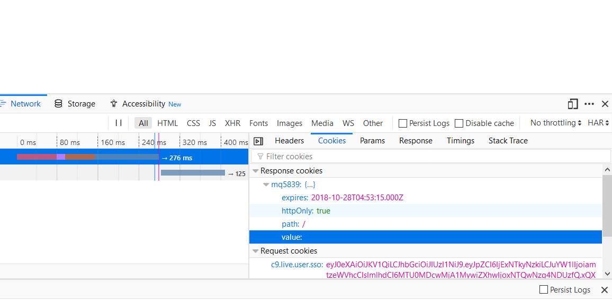

The output will be:
myTime = 1, elapsedTime = 1.0
myTime = 2, elapsedTime = 1.0
myTime = 3, elapsedTime = 1.0
myTime = 4, elapsedTime = 1.0
This is because the four calls to setTimeout will only add four instances of
advanceTime to the event queue at nearly the same time, without any pause in
between. Then after waiting for one second, each instance of advanceTime runs
one after another, quickly enough that it looks like they all ran at the same
time.
The output for this code was:
myTime = 1, elapsedTime = 0
myTime = 2, elapsedTime = 0.002
myTime = 3, elapsedTime = 0.002
myTime = 4, elapsedTime = 0.002
This still doesn't work correctly because the elapsed time is not increasing
by 1 second like it is supposed to. The mistake here is that the promises were
not chained in any way. You just have four calls to advanceTime that will run
consecutively. Each advanceTime instance returns a promise, but the next
instance of advanceTime is not waiting for that promise to resolve. You could
fix this by chaining:
oneSecond()
.then(advanceTime)
.then(advanceTime)
.then(advanceTime)
.then(advanceTime);The modified code is:
const rp = require('request-promise-native');
let site1 = {
uri: 'https://www.youtube.com',
method: 'HEAD', // What does this do?
resolveWithFullResponse: true
};
let site2 = {
uri: 'https://www.bbc.com/news',
method: 'HEAD',
resolveWithFullResponse: true
};
let site3 = {
uri: 'https://www.nst.com.my',
method: 'HEAD',
resolveWithFullResponse: true
};
let start = new Date();
rp(site1).then(res => {
let time = (new Date() - start)/1000;
console.log(`YouTube status: ${res.statusCode}, time: ${time}`);
return rp(site2);
}).then(res => {
let time = (new Date() - start)/1000;
console.log(`BBC News status: ${res.statusCode}, time: ${time}`);
return rp(site3);
}).then(res => {
let time = (new Date() - start)/1000;
console.log(`New Straits Times status: ${res.statusCode}, time: ${time}`);
})
console.log("Starting my web requests:");The output is:
Starting my web requests:
YouTube status: 200, time: 1.254
BBC News status: 200, time: 1.31
New Straits Times status: 200, time: 1.731
The main advantage of using promises in this case is that you can guarantee the
order in which these sites are visited.
The modified code is:
const rp = require('request-promise-native');
let site1 = {
uri: 'https://www.youtube.com',
method: 'HEAD', // What does this do?
resolveWithFullResponse: true
};
let site2 = {
uri: 'https://www.bbc.com/news',
method: 'HEAD',
resolveWithFullResponse: true
};
let site3 = {
uri: 'https://www.nst.com.my',
method: 'HEAD',
resolveWithFullResponse: true
};
let start = new Date();
let p1 = rp(site1).then(res => {
let time = (new Date() - start)/1000;
return console.log(`YouTube status: ${res.statusCode}, time: ${time}`);});
let p2 = rp(site2).then(res => {
let time = (new Date() - start)/1000;
return console.log(`BBC News status: ${res.statusCode}, time: ${time}`);
});
let p3 = rp(site3).then(res => {
let time = (new Date() - start)/1000;
return console.log(`New Straits Times status: ${res.statusCode}, time: ${time}`);
});
console.log("Starting my web requests:");
Promise.all([p1, p2, p3]).then(x=>{
console.log("All Finished");
});The output is:
Starting my web requests:
BBC News status: 200, time: 0.143
New Straits Times status: 200, time: 0.44
YouTube status: 200, time: 1.517
All Finished
The advantage here is that we might save some time running requests in parallel
instead of having to wait for each request to finish before running the next.
But now the order is not guaranteed.
app.put('/register', jsonencodedParser, function(req,res) {
let user = req.body;
db.find({"name": user.name}, function(err,docs) {
if(err)
{console.log("database error");}
else
{
let response = {};
if(docs.length == 0)
{
db.insert(user);
response.registration = "succeeded";
response.user = user.name;
response.reason = undefined;
res.send(JSON.stringify(response));
}
else
{
response.registration = "failed";
response.user = user.name;
response.reason = "user already exists";
res.send(JSON.stringify(response));
}
}
});
});Code:
request.put({uri:"http://0.0.0.0:8080/register", json:true, body:{"name":"Owen", "nickname":"Vanilla"}}, function(error,response,body) {
console.log(body);
});
request.put({uri:"http://0.0.0.0:8080/register", json:true, body:{"name":"Steve", "nickname":"Outback"}}, function(error,response,body) {
console.log(body);
});
request.put({uri:"http://0.0.0.0:8080/register", json:true, body:{"name":"Pack", "nickname":"Half-Pint"}}, function(error,response,body) {
console.log(body);
});
request.put({uri:"http://0.0.0.0:8080/register", json:true, body:{"name":"Danny", "nickname":"Doughboy"}}, function(error,response,body) {
console.log(body);
});
request.put({uri:"http://0.0.0.0:8080/register", json:true, body:{"name":"Karen", "nickname":"Six Feet"}}, function(error,response,body) {
console.log(body);
});First run:
{"registration":"succeeded","user":"Owen"}
{"registration":"succeeded","user":"Steve"}
{"registration":"succeeded","user":"Pack"}
{"registration":"succeeded","user":"Danny"}
{"registration":"succeeded","user":"Karen"}
Second run:
{"registration":"failed","user":"Owen","reason":"user already exists"}
{"registration":"failed","user":"Steve","reason":"user already exists"}
{"registration":"failed","user":"Pack","reason":"user already exists"}
{"registration":"failed","user":"Danny","reason":"user already exists"}
{"registration":"failed","user":"Karen","reason":"user already exists"}
app.get('/allUsers', function(req,res) {
let time = new Date();
let response = {"date":time.toString()};
db.find({}, function(err,docs) {
if(err)
{console.log("database error");}
else
{
let names = [];
for(let doc of docs)
names.push(doc.name);
response.users = names;
res.send(JSON.stringify(response));
}
});
});Code:
request.get("http://0.0.0.0:8080/allUsers", function(error,response,body) {
console.log(body);
})Output:
{"date":"Mon Oct 22 2018 15:56:17 GMT-0700 (PDT)","users":["Danny","Karen","Pack","Steve","Owen"]}
app.get('/nickname', jsonencodedParser, function(req,res) {
let query = req.body;
console.log(query);
db.find({"name": query.user}, function(err,docs) {
if(err)
{console.log("database error");}
else
{
let response = {};
if(docs.length == 0)
{
response.user = query.user;
response.error = "Not Found";
res.send(JSON.stringify(response));
}
else
{
response.user = docs[0].name;
response.nickname = docs[0].nickname;
res.send(JSON.stringify(response));
}
}
});
});Code:
request.get({uri:"http://0.0.0.0:8080/nickname", json:true, body:{"user":"Karen"}}, function(error,response,body) {
console.log(body);
});
request.get({uri:"http://0.0.0.0:8080/nickname", json:true, body:{"user":"Danny"}}, function(error,response,body) {
console.log(body);
});
request.get({uri:"http://0.0.0.0:8080/nickname", json:true, body:{"user":"Joe"}}, function(error,response,body) {
console.log(body);
});Output:
{ user: 'Karen', nickname: 'Six Feet' }
{ user: 'Danny', nickname: 'Doughboy' }
{ user: 'Joe', error: 'Not Found' }
In the "/" path the three cookies are sent. In the "/" path only the firstcookie
is got back from the browser because it is the only one with the "/" path
attribute. In the the "/left" path there are two cookies received from the
browser: firstcookie and secondcookie. This is because they have path attributes
that match the url (i.e. "/" and "/left"). In the "/right" path there are also
only two cookies received: firstcookie and thirdcookie. Since "/" and "/right"
match, the cookies with these path attributes are sent to the server.
Output:
Starting my web requests:
Testing cookies, "/" path, client sent: {undefined}
Testing cookies, "/left" path, client sent: {undefined}
Testing cookies, "/right" path, client sent: {undefined}
These results are different than part (a). This is because in request cookies
are not saved by default so no cookies are sent back to the server. In order to
use cookies they need to be saved in a "jar" and the subsequent request calls
need to be nested in the first call so that they share the same jar (I think).
Output:
Starting my web requests:
Testing cookies, "/" path, client sent: {undefined}
Testing cookies, "/left" path, client sent: {secondcookie=leftcookie; firstcookie=midcookie}
Testing cookies, "/right" path, client sent: {thirdcookie=rightcookie; firstcookie=midcookie}
Testing cookies, "/" path, client sent: {firstcookie=midcookie}
Code for /register view:
app.put('/register', jsonencodedParser, function(req,res) {
let user = req.body;
db.find({"name": user.name}, function(err,docs) {
if(err)
{console.log("database error");}
else
{
let response = {};
if(docs.length == 0)
{
argon2.hash(user.password).then(hash => {
user.password = hash;
db.insert(user);
response.registration = "succeeded";
response.user = user.name;
response.reason = undefined;
res.send(JSON.stringify(response));
});
}
else
{
response.registration = "failed";
response.user = user.name;
response.reason = "user already exists";
res.send(JSON.stringify(response));
}
}
});
});Database looks like this:
{"name":"Owen","nickname":"Vanilla","password":"$argon2i$v=19$m=4096,t=3,p=1$fcdAxZkQ/295vQ0CxM7oIQ$yWtbTEBZ5Rdb6ahLFG7G3u0NLNP2Kqg+99giQlvB9Kk","_id":"40uBvhHcYC6vQEp0"}
{"name":"Danny","nickname":"Doughboy","password":"$argon2i$v=19$m=4096,t=3,p=1$vJlzsTQZyYzZOpPpixrRzQ$hAEiln/xugugzLtb1nYNGNrKiKJkgWRHF9f5rAALBt0","_id":"6Dr9HbK8oM91S5A1"}
{"name":"Pack","nickname":"Half-Pint","password":"$argon2i$v=19$m=4096,t=3,p=1$TuoF/8yMtgR2Xdaz9Twnhw$QLYtumIMkzhLTjjy3JJWKjdgJSGZhFZIDtghSftmlcA","_id":"mzLCUtwtDHkGlTB9"}
{"name":"Steve","nickname":"Outback","password":"$argon2i$v=19$m=4096,t=3,p=1$Xf8Dr7vaPjacQJNl7VuPlw$Wl8hZa6XziivCaYMEcUl9x5T7noUePQSZ8jeq/GO2mw","_id":"7RXDeMdRaDfN9d25"}
{"name":"Karen","nickname":"Six Feet","password":"$argon2i$v=19$m=4096,t=3,p=1$0vuQlzPiwUZUJnWv17Z1jA$IPpwq/MoXA+Oj9LZQtMtKLXXuc4WmBIipu+i8AZkzag","_id":"i1K4qFz3VwBCOhbj"}
Code for the /allUsers view:
app.get('/allUsers', jsonencodedParser, function(req,res) {
let query = req.body;
db.find({"name":query.Rname}, function(err,docs) {
if(err)
{console.log("database error");}
else {
if(docs.length == 0)
{
console.log("User not registered");
res.send(JSON.stringify({"error":"User not registered"}));
}
else {
argon2.verify(docs[0].password,query.Rpassword).then(match => {
if(match) {
let time = new Date();
let response = {"date":time.toString()};
db.find({}, function(err,docs) {
if(err)
{console.log("database error");}
else {
let names = [];
for(let doc of docs)
names.push(doc.name);
response.users = names;
res.send(JSON.stringify(response));
}
});
}
else
{
console.log("Incorrect Password");
res.send(JSON.stringify({"error":"Incorrect Password"}));
}
});
}
}
});
});(i) nickname request with user name in the database:
{ user: 'Karen', nickname: 'Six Feet' }
(ii) nickname request with user name not in the database:
{ user: 'Joe', error: 'User not found' }
(iii) invalid nickname request with wrong password:
{ Rname: 'Steve', error: 'Incorrect Password' }
Before logging in:
After logging in:
Code:
let oldInfo = req.session.user;
req.session.regenerate(function(err) {
req.session.user = Object.assign({}, oldInfo, {loggedin: true});
res.send('You are logged in!');
});Wind path:
Wave path:
Code:
if (req.session.user.loggedin) {
req.session.user.windcount += 1;
res.send(`Wind: wind count: ${req.session.user.windcount}`);
} else {
res.send(`Sorry you have to login to see the wind!`);
}
It looks like to remove the cookie from the browser it deletes the session id value
and it sets an expiration date.